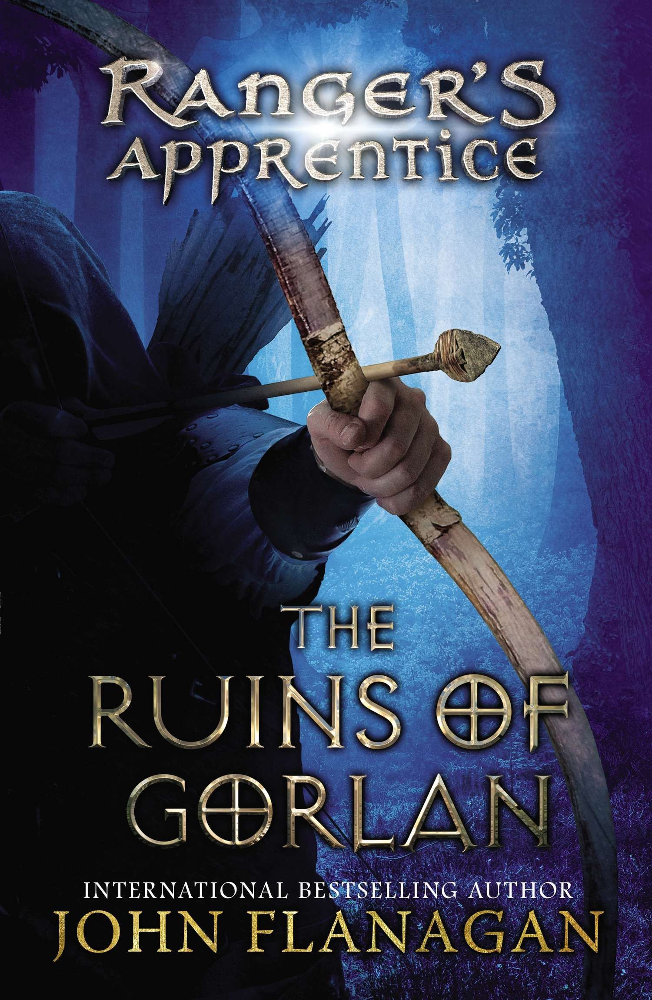

Hunger Games Triligy
Every year in the ruins of what was once North America, the Capitol of the nation of Panem forces each of its twelve districts to send a teenage boy and girl to compete in the Hunger Games. A twisted punishment for a past uprising and an ongoing government intimidation tactic, The Hunger Games are a nationally televised event in which "Tributes" must fight with one another until one survivor remains. Sixteen year old Katniss Everdeen volunteers in her younger sister's place to enter the games, and is forced to rely upon her sharp instincts as well as the mentorship of drunken former victor Haymitch Abernathy when she's pitted against highly-trained Tributes who have prepared for these Games their entire lives. If she's ever to return home to District 12, Katniss must make impossible choices in the arena that weigh survival against humanity and life against love.
Harry Potter Series

The story of Harry Potter begins as he is about to celebrate is eleventh birthday. Up until this time, Harry’s birthdays have come and gone like any other day; they have been nothing worth celebrating. You see, Harry has lived in a cupboard under the stairs in his Uncle Vernon’s and Aunt Petunia’s house. He has never received a birthday present worth remembering. His very few possessions have been the hand-me-downs of his cousin Dudley. Harry has never known why the Dursley’s have never treated him well. All he knows is that his mother and father died in a car crash and he came to live with the Dursley’s when he just one year old.
But all things will forever change on Harry’s eleventh birthday. He learns from a letter, given to him by an unknown, very large person name Hagrid, that he is not just a regular person. He learns that like his mother and father, he too is a wizard. Harry’s life changes in an instant. The letter he receives is an acceptance and invitation to study at Hogwarts School of Witchcraft and Wizardry.
Rangers Apprentice Series

Will is an orphan raised in the household of Baron Arald. It is Choosing Day, when each ward is apprenticed to a Craftmaster to learn a trade. Will wants to be accepted in Battleschool where the fief's knights are trained. Instead, he is chosen to become a Ranger's apprentice. Will is deeply disappointed, and a little scared. Rangers are shadowy characters, believed to practice magic that makes them invisible to ordinary people. His master, Halt, is cranky and makes Will do all the housework.
What Will doesn't know is that Rangers are protectors of the kingdom. They are highly trained spies and agile fighters who warn the country of coming danger. With the exiled Morgarath, Lord of the Mountains of Rain and Night, gathering his forces for an attack, Will's growing skills will be tested, immersing him in unexpected adventures.